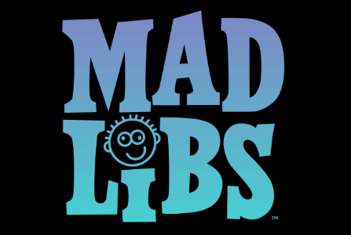
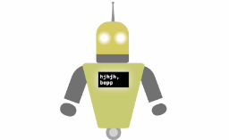
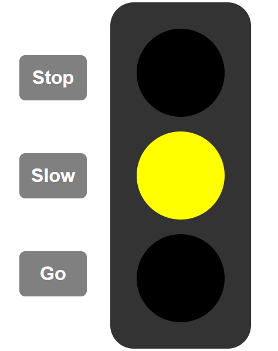
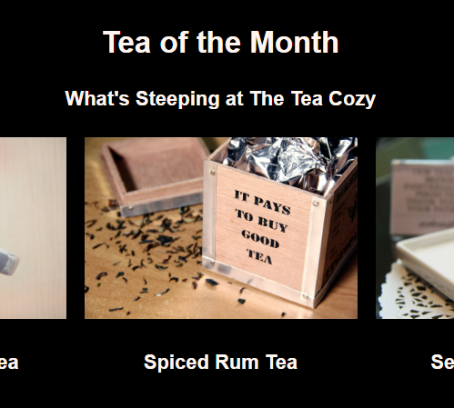

Web Development Projects
ACL Injury Prevention Project (Ongoing)

To help to prevent ACL injuries among atheletes, which has seen a rise, my team came together to design an IoT device (compression sleeve) that athletes can wear on their knees. This device will use IMU, pressure, and stretch sensors
to take readings of the movements of a user's knee. These readings would be analyzed, and various suggestions would be sent to each user's account (dashboard) on a website.
The readings will also be used to create a dataset that can be used for future research on ACL injuries.
Additionally, the website inlcudes an ACL Risk Assessment to predict a user's chances of getting an ACL injury based on data entered by the user as answers to certain question. This risk checker was made using Python, Scikit-learn
and Streamlit.
You can see the website here.
Chadashiel Education Website
As part of my goal to start a free educational platform, I created this website that will be published on the web officially, soon.
You can view the website here.
Mad Libs Game

To practice my JavaScript programming skills, I created a simple Mad Libs game that prompts the user for various words (nouns (user's name), verbs, adjectives).
and then generates a very simple story using those words.
To view the website, click here.
Robot Project

To practice my web development skills, I decided to do an unsual project of creating a robot that can change its eye color to red, simulating a laser beam. The robot is also on a background that can change its color anytime a button is clicked.
This was done using HTML, CSS, and JavaScript.
To view the website, click here.
Traffic Light Project

To practice my web development skills, I decided to do create a traffic light system, using HTML, CSS, and JavaScript.
To view the website, click here.
Codecademy Tea Website Project

As part of my Codecademy web development course, I built a simple website for a tea restaurant using HTML and CSS.
To view the website, click here.